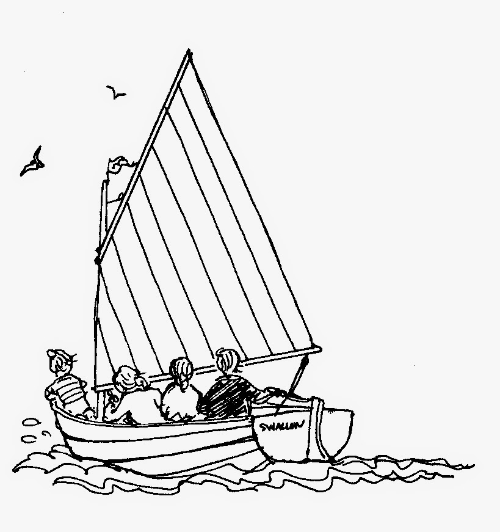
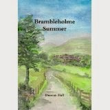
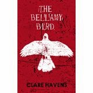
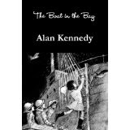
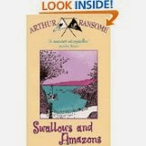
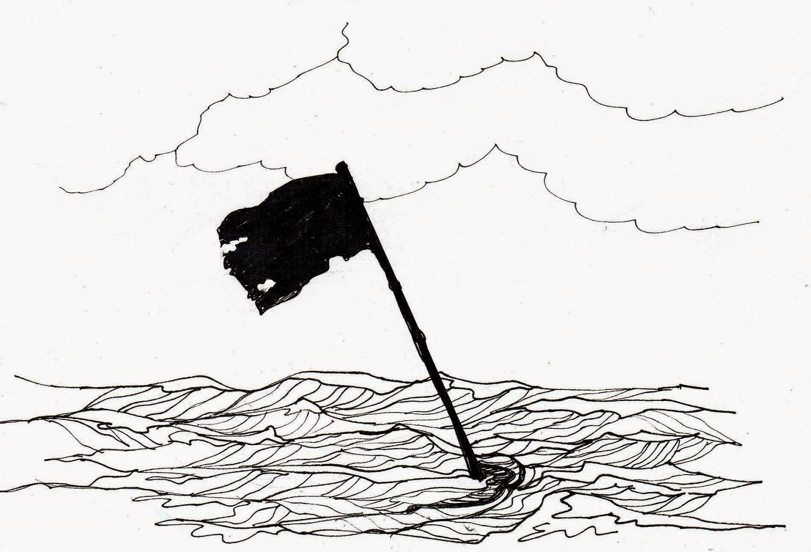

{kind=link}

'And closing her eyes she saw the Wren, filled with children, going down the river before dark. “Ghosts,” she thought. Putting her hand in her pocket she felt the sharp blade of her penknife. That was real enough. She smiled to herself and went into the house.' (from The Bellamy Bird by Clare Havens)
You know how you think you've had such
an exciting idea – and then everyone else has had it too? Over the
last few weeks I've read four novels by authors living in Tasmania,
West Yorkshire, Australia, and South West France. All of us share the
lowest common denominator that we've been inspired by Arthur
Ransome's 'Swallows and Amazons' series to write versions of our own.
The novels are: Those Snake Island Kids by Jon Tucker, Brambleholme
Summer by Duncan Hall, The Bellamy Bird by Clare Havens, The Boat in
the Bay by Alan Kennedy and my own, The Salt-Stained Book.
This isn't intended as a collective
review of the four novels – we have our differences, our individual successes and failures. What I found fascinating was the extent to which we were all drawing on a shared inheritance which was sometimes
helpful and sometimes, frankly, not. Let me introduce you to
these other members of the School of Ransome who I only know via the
wonders of the web.

Duncan Hall was born in Bradford, West Yorkshire. He's a songwriter and musician and performs in The Hall Brothers, a popular UK acoustic band. His first book was an academic history of music in the Labour Movement and he's also written A2 textbooks on Government & Politics and on Citizenship.
Clare Havens grew up near Pin Mill,
Suffolk, lived for a while in Manhattan and now lives in Sydney where her 9 year old daughter is
learning to sail on the same waters where fictional Mrs Walker began. She's a fan of film noir and of murder
mysteries (particularly the Golden Age writers such as Margery Allingham and D L Sayers). Her other books include the 'Bella Street' series of detective stories for children and the first of the 'Constable Country' Murder Mysteries
for adults.
{kind=link}

Alan Kennedy is emeritus professor of Psychology at the University of Dundee, and research associate at the Laboratoire de Psychologie et Neurosciences Cognitives of Paris Descartes University, Boulogne-Billancourt, France. He has carried out research into eye movement control in reading and is the author of over 100 journal articles. (I cheated there and copied from his Wikipedia entry.) He lives in the village of Lasserrade in South West France and is the father of award-winning writer A.L.Kennedy (pause for genuflection).{kind=link}
Jon
Tucker describes himself as 'a Kiwi ex-teacher turned adventurer'.
He and his wife brought up their five children on a 38' Herresschoff ketch,
NZ
Maid,
then one of his sons, Ben, turned the tables by shipping his father as cabin boy on a low-budget sailing adventure to Antarctica where they became trapped in pack ice in the windiest location on the planet -- and survived (more genuflection here). This
resulted in Tucker's first (non-fiction) book Snow
Petrel
.
All
of us are honest about our inspiration: we acknowledge Arthur Ransome in our
credits / we join the AR Society / introduce a Swallows and
Amazons-reading child into our stories and in my case, at least, get
our lead characters thinking desperately 'what would the Swallows
do next?' I think
I'm correct in saying that all the books listed above, except perhaps
The Bellamy Bird, are first efforts in fiction and there's no doubt that any writer can learn a huge amount about the craft of writing from studying those who have gone before. AR did it himself.: I would say that his early engagement with the work of R L Stevenson was seminal to the S&A series and he makes frequent, explicit reference to Treasure
Island in particular. In fact constant literary allusion is one of
AR's most distinctive characteristics and one which is possibly treacherous when writing a story for children today.
(I'll put my own hand up here.)
Which
leads to the main problem – who are we writing these Ransome-homage stories for? Actual c21st children? Other Ransome enthusiasts who will understand our references? Ourselves? Ourselves
as children? The Market? Ransome isn't much help here. First he claimed that Swallows
and Amazons was written for the children of his friends, then he denied this and
said he was writing from his own childhood memories. As his confidence in the success of the stories grew he was more willing to insist that he was writing them for himself – and for anyone who might 'overhear' him.
Most of us are small-published or self-published so may find
this concept reassuring. 'Write the stories that you would like to read' is a comforting, if slightly glib, piece of advice suitable for the part-timer. We Ransome-aspirants forget at our peril
that AR was a professional writer who had been earning his
living by his pen since he was a very young man, and by the time he
wrote S & A he was also a highly experienced journalist with the
journalist's imperative need to write clearly and plainly to
communicate with a large unknown, unseen audience.
{kind=link}

Swallows and Amazons was however a new beginning and a personal gamble. He said it was a story that almost 'wrote itself' which I interpret as meaning that he wrote it out of need, to articulate something that he could express in no other way. It was a book -- and then a series -- that had to build its own audience, as truly original books do. Today he may seem a reassuring role model because his books are read as frequently by adults as by children so, if we're not quite sure who we're writing for, we can allow ourselves to hope that there'll be someone there in the 0-100 age range who'll cotton on to what we're saying
Now I believe passionately in the virtues of shared, inter-generational reading. I genuflect most deeply of all to writers (like J K Rowling) who can be loved by grandparents as well as grandchildren and I yearn for people to be able to search the
library shelves for 'family' reading as they might search for
'family' films. The truth, however, is that the organisation of book
data doesn't allow this and if one has any aspiration at all
to be read by children, then they must be the primary
category. The greater flexibility of small publishing and internet book-selling may seem to blur these boundaries but
the question of audience cannot be allowed to go away. Who are these books for? Ex-children or children now?
All
of us follow in the adventure mould – rescues, treasure hunts,
the righting of injustice and recovery of lost inheritance – safe
enough for any generation, you might think, though we School of
Ransome writers have a delicate balance to strike
between realism and imagination. We have an inalienable commitment to the challenges of the natural world and cannot remove our characters to the realms of magic. Ransome was extraordinarily clever at allowing happenings that are often intrinsically smallish, to be mediated through his children's consciousness until they become convincingly large to the reader as well as to the fictional characters. His children remake and re-experience their world both through their practical engagement with it as well as their imaginative approach to mapping and re naming it. All of us attempt this in our books but, speaking for myself, I found it almost impossible to achieve without introducing an awkward self-consciousness, a mannered quality, a lack of pace and grip.
But as soon as one gives up and commits to the
baddies being irrevocably bad and the natural disasters truly perilous,
there is an inevitable loss of the Ransomesque quality of playfulness
and a major change in the balance of safe and unsafe. There are ways of ameliorating this – using time-slip (Clare Havens) or making it clear that these events come from a recollected past where the children are 'set in amber' (Alan Kennedy). We can make our children really
rather superbly capable and knowledgeable (Jon Tucker) or we may need
to make more use of adults as Duncan Hall does with his Ransomey 'Ancient'.
{kind=link}
None
of us banish adults from our world altogether – Ransome didn't -- but
if the adults are any more than ciphers they will add appreciably to our
casts of character which are already large. Not for us the single
heroine or hero. There were four
(even five) Swallows as well as the two Amazons and most of us replicate
those numbers. And we are usually talking team work here, not single
combat – worthwhile but definitely tricky. We must steer our way
between the characters merging into a blur of names or slotting far
too neatly into pre-determined slots – the Leader, the Home-maker,
the Tomboy, the Youngest.
I'd intended to spend more time talking about specific post-Ransome problems of this nature but I realise that I've been chipping away at the question of audience because that's what's troubling me. The central character in my current novel has done what AR's characters didn't do, she's grown older. Not by much -- she was 15 in the SSB, she's 16 now but in this story she has taken the lead and is demanding to act on her own. Yes, there are younger children in the story but they are as secondary as the adults. It's a complicated story too, however hard I struggle to keep it simple and accessible. I don't think it's going to work for the 9-11s which was where the series began, however pleased I am when the stories are read by adults.
If you knew the number of times I have told myself I should give up and start something new. Yet I can't. It won't let me. Ransome would not have been allowed to give up once the 'Swallows and Amazons' series was established -- he had a publisher and a tangible public to keep him at work -- plus the little matter of being the only earner in his household.
Those things do not apply here. I know quite well that it would be more directly remunerative to go and shelf stack. The idea that I am spending hours struggling with this stubborn concept for an audience of myself makes me gawp with incredulity. Somehow writing this blog has served to convince me that there's another audience category -- one that isn't human or subjective or defined by age range. And that's the thing itself. Writing in the company of other Swallows and Amazons legatees reminds me that the treasure that was finally unearthed on Cormorant Island was a book. It might or might not have been a good book but the message of the story is quite clear, if you're convinced that there's something hidden under the rocks, all you can do is keep digging.
 |
| Claudia Myatt's first drawing for the new book (if ever!) |
{kind=link}